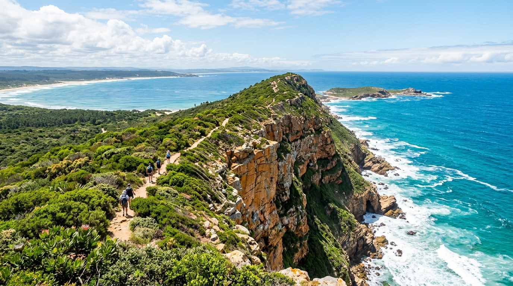
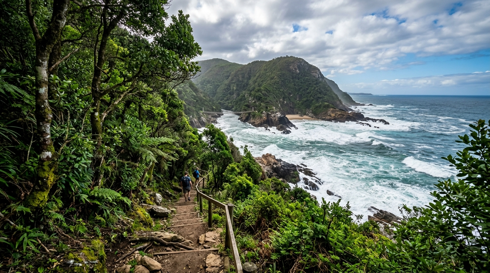
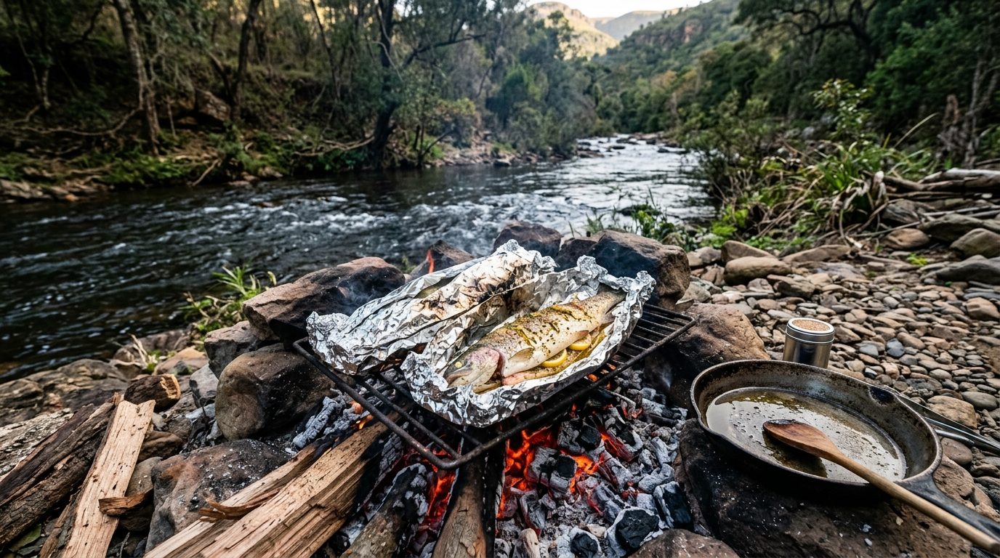
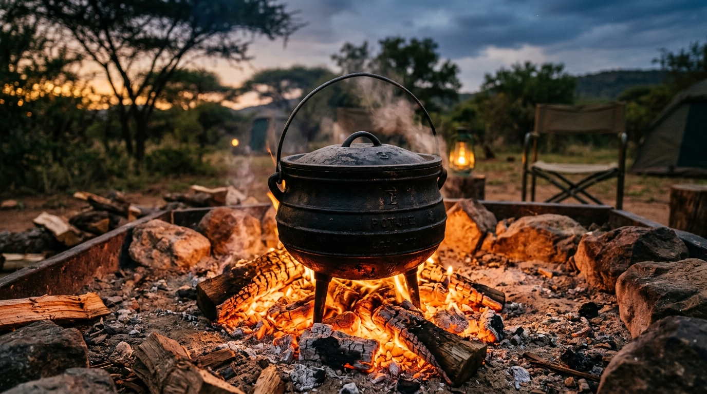

Robberg Natuurreservaat
9.2 km~4 urePlettenbergbaai
'n Skiereiland-lus bo die Indiese Oseaan — robbe, fynbos en 'n hangbrug oor die gaping.
Tuinroete, Suid-Afrika
Egte wandelpaaie, kampvuurresepte en kort video's van die woude, lagunes en kus tussen Mosselbaai en Storms Rivier — gemaak vir enigeen wat eerder buite wil wees.
Te voet
Elke pad is gemerk soos jy dit op 'n wandelbord sou sien — groen vir maklik, blougroen vir matig, en rooibruin vir moeilik.

'n Skiereiland-lus bo die Indiese Oseaan — robbe, fynbos en 'n hangbrug oor die gaping.

Suid-Afrika se oorspronklike multidag-kuspad, deur inheemse woud en rivierkruisings.
Melkhoutwoud maak plek vir dramatiese seeklowe — 'n sagte lus met 'n groot uitsig as beloning.
'n Volledige deurkruising van die Outeniekwaberge en woude, vir dié met 'n paar dae oor.
'n Maklike wandeling langs die lagune — goed vir 'n eerste aand in die dorp of 'n rusdag tussen wandelinge.
Klowe, toutrappe en rotspoele langs een van die streek se mees dramatiese kusstroke.
Kampkombuis
Resepte gebou vir 'n potjie, 'n rooster oor kole, of foelie in die as — niks wat 'n kombuis nodig het wat jy nie het nie.

Forel, suurlemoen, botter en wilde knoffel, toegedraai in foelie en begrawe in die kole vir 12 minute.

'n Stadige drie-uur potjie vir 'n rusdag, met wyn, tiemie en pêrelgort.
Plat brood wat nie hoef te rys nie, reguit op die rooster gaargemaak — lekker met enigiets, gou gaar.
Heel begrawe in warm as vir 'n uur, oopgesny en afgerond met botter en kaneel.
Kyk
Kort films van die pad en die vuur. Voeg jou eie YouTube-video-ID's by in js/main.js om dit lewendig te maak.
Dag vir dag deur Suid-Afrika se oorspronklike kuspad.
Vang, maak skoon, kook — 'n volledige rivieroewer-ete in minder as 'n uur.
'n Stil vroeë begin op die skiereiland, voor die dagbesoekers arriveer.
“Die hemel vertel van sy heerlikheid; die lug bo ons wys die werk van sy hande.”Psalm 19:1
Oor Ons
Vure en Avonture is 'n projek gebou rondom die wandelpaaie, kus en woude van die Tuinroete — 'n klein hoekie van Suid-Afrika met 'n buitengewone hoeveelheid wilde grond om te verken. Wat jou ook al buite trek, of dit die stilte, die uitdaging, of die gevoel van iets groter as jouself daar buite is — jy is welkom hier.